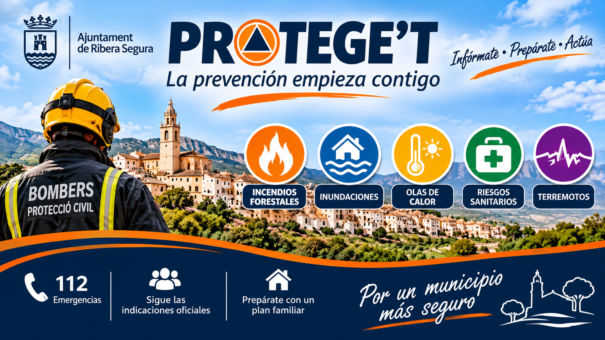

🌧️
Lluvias intensas e inundaciones
Evita barrancos, cauces y pasos inundables. No cruces zonas anegadas a pie ni en vehículo.

Información clara para conocer los riesgos de nuestro entorno, prepararnos ante una emergencia y proteger a las personas y al municipio de Ribera Segura.
Aprende a protegerte Conoce los riesgosLa prevención comienza identificando los peligros que pueden afectar a nuestro entorno. Estos contenidos son ejemplos divulgativos para el municipio ficticio de Ribera Segura.
Evita barrancos, cauces y pasos inundables. No cruces zonas anegadas a pie ni en vehículo.
No arrojes colillas ni enciendas fuego en zonas no autorizadas. Si ves humo o llamas, avisa al 112.
Hidrátate, evita esfuerzos en las horas centrales y presta atención a personas vulnerables.
Revisa instalaciones, detectores de humo y hábitos seguros en cocina y calefacción.
Asegura objetos en balcones, aléjate de árboles y elementos inestables y limita desplazamientos innecesarios.
Adapta la conducción a la meteorología, respeta las señales y facilita el paso a los vehículos de emergencia.
Pequeñas acciones antes, durante y después de una emergencia pueden reducir sus consecuencias.
No siempre la opción más segura es salir. En algunas emergencias, como determinados episodios de humo o contaminación exterior, puede ser necesario permanecer en un edificio.
La regla principal: sigue las instrucciones de las autoridades y servicios de emergencia. No improvises rutas ni decisiones basándote en rumores.
La cultura preventiva se construye con información accesible, formación práctica y participación ciudadana.
Agua, alimentos no perecederos, linterna, radio, pilas, botiquín, medicación y documentación esencial.
Consulta los canales oficiales de emergencias y protección civil. No difundas mensajes sin verificar.
Habla en familia sobre cómo contactar, dónde reuniros y qué hacer si no podéis regresar a casa.
Infórmate, comparte consejos útiles y participa en la prevención.
Este espacio podría recoger campañas preventivas, convocatorias formativas y recomendaciones estacionales.
Revisa desagües, evita almacenar objetos en zonas inundables y conoce rutas alternativas. Recuerda: nunca cruces un cauce con agua.
Contenido ficticio con finalidad exclusivamente educativa.
Consulta nuestras redes sociales para encontrar contenidos divulgativos, consejos de autoprotección y campañas de prevención.
Accede a los perfiles de Protege’T Ribera en Instagram, Facebook, TikTok, X y YouTube.